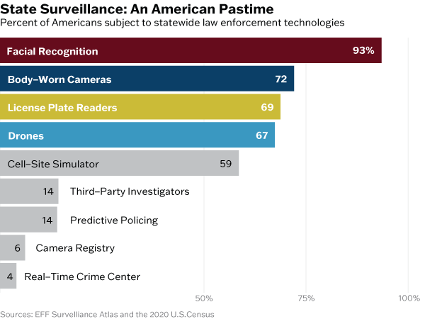
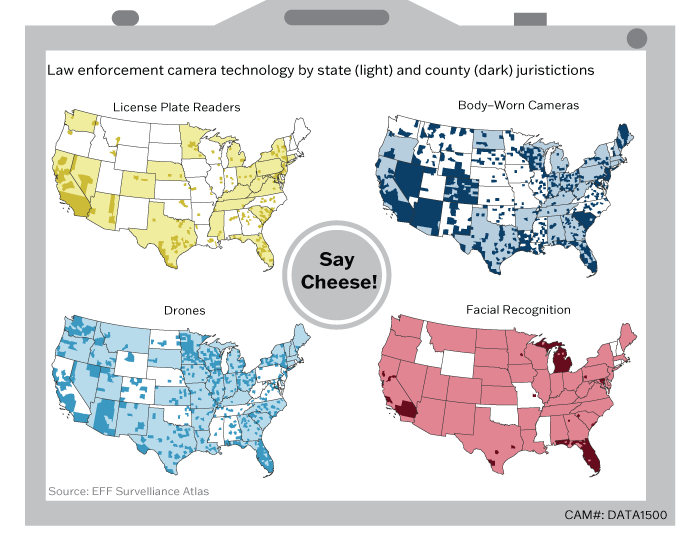
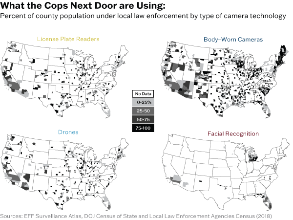
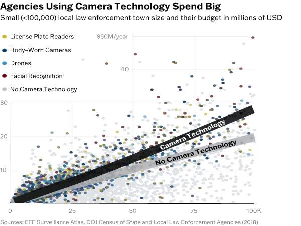

An investigation on state and local law enforcement surveillance technology
Daniel Fiume - May 2, 2024
I recently discovered my local law enforcement agency regularly uses drones to assist with policing. This surprised me, but I was even more surprised to find this is currently a very common practice among local and state law enforcement agencies. What other technology do they use? While most may be familiar with the fact that federal agencies, such as the FBI and NSA, widely use surveillance technologies, this article investigates that the practice is widespread throughout the United States. It is important to note that this article features a compilation of publicly available data on technology use, and thus may be an underestimate in total.
A large proportion of surveillance technology use comes at the state level. Some surveillance technology, such as body worn cameras, offers transparency between police and the public. Others, such as cell-site simulators (fake cellphone towers), are often seen as a violation of civil liberties by those with privacy concerns. The following chart explores the different technologies used by states, totaled by what percentage of Americans live in states that use the technology.
The most used technologies are all in some form, camera related, with facial recognition being a tool that could be used on over 300 million Americans. I wanted to see where these camera technologies were being used at both the state and county level of jurisdiction.
Facial recognition and license plate readers are mostly used by state police, while drones and body-worn cameras are more widely used in county law enforcement agencies. Florida, Michigan, and New York actively employ all of these technologies at the state level as well as being the home to many counties that use these technologies as well. However, this still doesn’t paint the whole picture: most law enforcement agencies and agents are ones for local towns. Additionally, Alaska and Hawaii were omitted due to a lack of data.
While not precise locations, the following figure investigates local law enforcement similar to the above graphic by taking each local law enforcement that uses a technology and summing the population they serve for each county.
It is interesting to see that there are not many local law enforcement agencies that use facial recognition other than a select few states given its popularity at the state level. Another interesting consideration with this technology is the cost and size of local law enforcement agencies that use these technologies. Are departments with higher per capita spending more likely to be using these camera technologies?
While this figure is not a statistical test, the trend line indicates that for most towns sized between 50 and 100 thousand people, these law enforcement agencies spend more per capita.
In sum, the American surveillance state is fairly well equipped. Public data like the EFF Atlas of Surveillance used in this article are important to increase transparency and awareness of the relationship between law enforcement and the general public.
This project aims to give an unbiased picture (no pun intended) of recent law enforcement technology use. The main source of this data is the Electronic Frontier Foundation’s Atlas of Surveillance, an aggregation of news articles and reports on law enforcement technology use. Articles range from 2015 to 2024, and the dataset was last updated on March 8th, 2024. See their disclaimer here. Population data by county and state was used for the first and third figures from the 2020 U.S. Census. Data regarding the population numbers that local law enforcement agencies serve as well as their operating budgets was used from the 2018 Department of Justice State and Local Law Enforcement Agencies Census, found here. Some anomalously high and low per capita spending points were removed from the last figure. These data points were not correct upon inspection due to either the budget being in cents or the population served equaling the number of employees, not residents in the jurisdiction.
Data work was done in R, with additional visual polishing in Adobe Illustrator. See the code, data, and illustrator files here.
This project was completed for a university data visualization course, DATA1500. Special thanks to the instructor, Reuben Fischer-Baum for an inspiring semester.